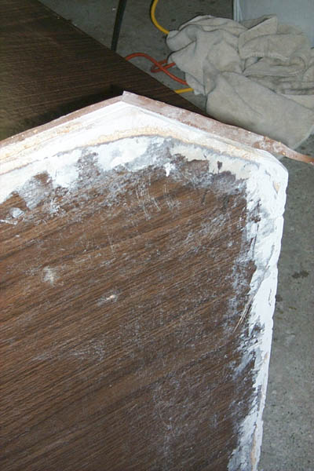
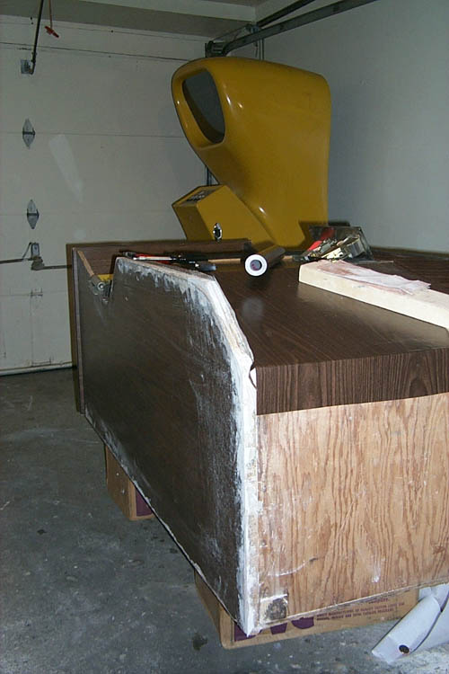
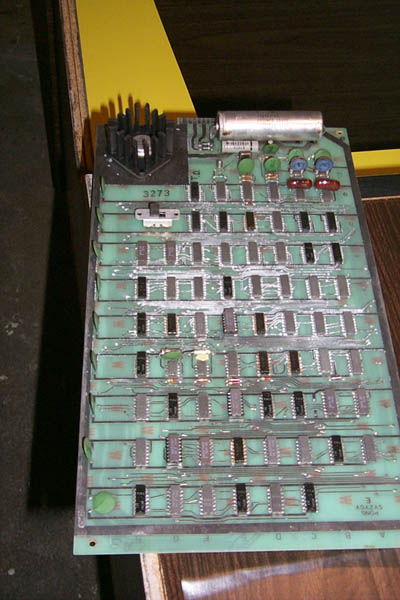
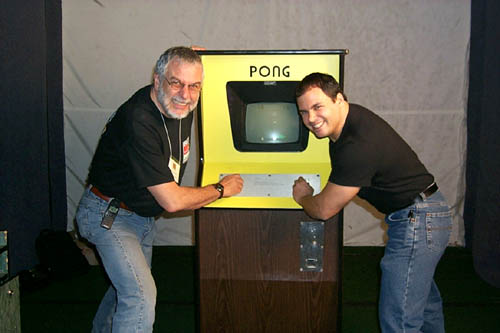

Atari Pong Coin-op
Serial # ZZ-001
According to Nolan Bushnell, the serial # indicates the unit was one of the first 100 if not the first to roll off the assembly line. Atari maintained a cryptic serial numbering system to keep its competition from knowing how many units were made. Total number of Atari Pongs produced: 38,000... all of them built inside of a converted skating rink.
Beaten and battered, this Atari Pong coin-op was picked up at Newark International Airport after its trip from Humble, Texas. The unit had suffered dry rot in the front lower section, water damage to the rear of the unit, beer and soda residue caked into the front yellow area, the control panel was severely tarnished, all of the t-molding needed to be replaced, the rear panel was gone and to top it off the motherboard has suffered extreme corrision. The restoration was not a task for the faint of heart.

Almost the entire lower front
section on both sides had to be rebuilt using Minwax wood putty to rebuild
and shape the entire front outter and inner sections back to their original
shapes.

The lower front section and
inside walls were rebuilt, after weeks of searching for precisely the exact
color and pattern of 70's wood panel looking contact paper, it was applied
to the entire cabinet to restore it back to its original condition.
Also the bottom of the cabinet was raised off the floor using a 2X4 platform
which was then painted flat black to keep the cabinet from sustaining any
damage in the future. (Note the Yellow Computer Space, serial
#946. According to Nolan Bushnell, there may have been as little
as a dozen or so of the yellow versions built. To date the Atari
Historical Society is aware of only 3 known to still exist.)

The Pong motherboard was
in some pretty bad shape, the board was soaked in a cleaner for 2 days,
washed down with bottled water and let dry for a week, several gates had
to be replaced to bring the board back to life.

Nolan Bushnell and Curt
Vendel battling it out
Here is the unit fully restored and on display at the PGL tournaments at XS New York during the May 20-22 1999 PGL finals. Nolan Bushnell and "Thresh" Fong of Quake fame played a match against one another, final score 15-5 Nolan. (pssst... I beat Nolan during a warm-up game ;-)
Restoration of the Pong coin-op
was a challenge and a true pleasure, I enjoyed every minute of it and I
am quite honored to have added this beautiful machine to the Atari Historical
Society museum. I would like to personally thank a close friend
Callan Hendricks for his immense assistance in helping me acquire this
Pong coin-op to restore as well as the Nutting Associates Yellow Computer
Space.